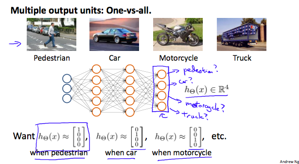

Machine Learning (5): Neural Networks
- Why Neural Networks
- Background of Neural Networks
- Model Representation
- Examples and Intuitions
- Multiclass Classification
Why Neural Networks
The number of quadratic features closes to \(\frac{n^2}{2}\), it is computationally expensive.
The number of cubic features closes to \(O(n^3)\), it is more computationally expensive.
Computer vision problem looks at matrixes. Because dimensions of pixel images often large (e.g. n= 7500 for 50\(\times\)50 pixel images(RGB)), the number of quadratic features for the problem are 3 million.
Background of Neural Networks
Origins: Algorithms that try to mimic the brain. It was very widely used in 80s and early 90s; popularity diminished in late 90s. It is now a state of the art technique for many application, because its expensive computation can be meet.
Input wire: Dendrite
Output wire: Axon
Model Representation
At a very simple level, neurons are basically computational units that take inputs (dendrites) as electrical inputs (spikes) that are channeled to outputs (axons).
In neural networks, dendrites are like the input features \(x_1⋯x_n\), and the output is the result of our hypothesis function. \(x_0\) input node is sometimes called the bias unit. It is always equal to 1. In neural networks, we use the same logistic function as in classification, \(\frac{1}{1+e^{-\theta^Tx}}\), yet we sometimes call it a sigmoid (logistic) activation function. In this situation, our "theta" parameters are sometimes called weights.
Visually, a simplistic representation looks like:
\[\begin{bmatrix}x_0 \newline x_1 \newline x_2 \newline \end{bmatrix}\rightarrow\begin{bmatrix}\ \ \ \newline \end{bmatrix}\rightarrow h_\theta(x)\]
Input nodes (layer 1), also known as the input layer, go into another node (layer 2), which finally outputs the hypothesis function, known as the output layer.
We can have intermediate layers of nodes between the input and output layers called the hidden layers.
In this example, we label these intermediate or hidden layer nodes \(a^2_0⋯a^2_n\) and call them activation units.
\[\begin{align*}& a_i^{(j)} = \text{"activation" of unit $i$ in layer $j$} \newline& \Theta^{(j)} = \text{matrix of weights controlling function mapping from layer $j$ to $j+1$}\end{align*}\]
The values for each of the "activation" nodes is obtained as follows:
\[\begin{align*} a_1^{(2)} = g(\Theta_{10}^{(1)}x_0 + \Theta_{11}^{(1)}x_1 + \Theta_{12}^{(1)}x_2 + \Theta_{13}^{(1)}x_3) \newline a_2^{(2)} = g(\Theta_{20}^{(1)}x_0 + \Theta_{21}^{(1)}x_1 + \Theta_{22}^{(1)}x_2 + \Theta_{23}^{(1)}x_3) \newline a_3^{(2)} = g(\Theta_{30}^{(1)}x_0 + \Theta_{31}^{(1)}x_1 + \Theta_{32}^{(1)}x_2 + \Theta_{33}^{(1)}x_3) \newline h_\Theta(x) = a_1^{(3)} = g(\Theta_{10}^{(2)}a_0^{(2)} + \Theta_{11}^{(2)}a_1^{(2)} + \Theta_{12}^{(2)}a_2^{(2)} + \Theta_{13}^{(2)}a_3^{(2)}) \newline \end{align*}\]
If network has \(s_j\) units in layer \(j\) and \(s_{j+1}\) units in layer \(j+1\), then \(\Theta^{(j)}\) will be of dimension \(s_{j+1}×(s_j+1)\). The \(+1\) comes from the addition in \(\Theta^{(j)}\) of the bias nodes, \(x_0\) and \(\Theta^{(j)}_0\). In other words the output nodes will not include the bias nodes while the inputs will.
We're going to define a new variable \(z^{(j)}_k\) that encompasses the parameters inside our \(g\) function. In our previous example if we replaced by the variable \(z\) for all the parameters we would get:
\[\begin{align*}a_1^{(2)} = g(z_1^{(2)}) \newline a_2^{(2)} = g(z_2^{(2)}) \newline a_3^{(2)} = g(z_3^{(2)}) \newline \end{align*}\]
In other words, for layer \(j=2\) and node \(k\), the variable \(z\) will be:
\[z_k^{(2)} = \Theta_{k,0}^{(1)}x_0 + \Theta_{k,1}^{(1)}x_1 + \cdots + \Theta_{k,n}^{(1)}x_n\]
The vector representation of \(x\) and \(z_j\) is:
\[\begin{align*}x = \begin{bmatrix}x_0 \newline x_1 \newline\cdots \newline x_n\end{bmatrix} &z^{(j)} = \begin{bmatrix}z_1^{(j)} \newline z_2^{(j)} \newline\cdots \newline z_n^{(j)}\end{bmatrix}\end{align*}\]
Setting \(x=a^{(1)}\), we can rewrite the equation as:
\[z^{(j)} = \Theta^{(j-1)}a^{(j-1)}\]
Now we can get a vector of our activation nodes for layer \(j\) as follows:
\[a^{(j)} = g(z^{(j)})\]
Last Step:
\[h_\Theta(x) = a^{(j+1)} = g(z^{(j+1)})\]
Examples and Intuitions
The \(\Theta^{(1)}\) matrices for AND, NOR, and OR are:
\[\begin{align*}AND:\newline\Theta^{(1)} &=\begin{bmatrix}-30 & 20 & 20\end{bmatrix} \newline NOR:\newline\Theta^{(1)} &= \begin{bmatrix}10 & -20 & -20\end{bmatrix} \newline OR:\newline\Theta^{(1)} &= \begin{bmatrix}-10 & 20 & 20\end{bmatrix} \newline\end{align*}\]
We can combine these to get the \(XNOR\) logical operator (which gives 1 if \(x_1\) and \(x_2\) are both 0 or both 1).
\[\begin{align*}\begin{bmatrix}x_0 \newline x_1 \newline x_2\end{bmatrix} \rightarrow\begin{bmatrix}a_1^{(2)} \newline a_2^{(2)} \end{bmatrix} \rightarrow\begin{bmatrix}a^{(3)}\end{bmatrix} \rightarrow h_\Theta(x)\end{align*}\]
For the transition between the first and second layer, we'll use a \(\Theta^{(1)}\) matrix that combines the values for AND and NOR:
\[\Theta^{(1)} =\begin{bmatrix}-30 & 20 & 20 \newline 10 & -20 & -20\end{bmatrix}\]
For the transition between the second and third layer, we'll use a \(\Theta^{(2)}\) matrix that uses the value for OR:
\[\Theta^{(2)} =\begin{bmatrix}-10 & 20 & 20\end{bmatrix}\]
Let's write out the values for all our nodes:
\[\begin{align*}& a^{(2)} = g(\Theta^{(1)} \cdot x) \newline& a^{(3)} = g(\Theta^{(2)} \cdot a^{(2)}) \newline& h_\Theta(x) = a^{(3)}\end{align*}\]
Multiclass Classification
To classify data into multiple classes, we let our hypothesis function return a vector of values. Say we wanted to classify our data into one of four categories. We will use the following example to see how this classification is done. This algorithm takes as input an image and classifies it accordingly:

We can define our set of resulting classes as \(y\):

Each \(y(i)\) represents a different image corresponding to either a car, pedestrian, truck, or motorcycle. The inner layers, each provide us with some new information which leads to our final hypothesis function. The setup looks like:

Our resulting hypothesis for one set of inputs may look like:
\[h_\Theta(x) =\begin{bmatrix}0 \newline 0 \newline 1 \newline 0 \newline\end{bmatrix}\]
In which case our resulting class is the third one down, or \(h_\Theta(x)_3\), which represents the motorcycle.
Machine Learning (4): Overfitting and normalization
The problem of Overfitting
Underfitting, or high bias, is when the form of our hypothesis function \(h\) maps poorly to the trend of the data. It is usually caused by a function that is too simple or uses too few features.
Overfitting, or high variance, is caused by a hypothesis function that fits the available data but does not generalize well to predict new data. It is usually caused by a complicated function that creates a lot of unnecessary curves and angles unrelated to the data.
There are two main options to address the issue of overfitting:
Reduce the number of features:
Manually select which features to keep.
(Use a model selection algorithm).Regularization
Keep all the features, but reduce the magnitude of parameters \(\theta_j\). Regularization works well when we have a lot of slightly useful features.

The figure above shows the Underfitting, Normal, Overfitting.
Regularized Linear Regression
We regularize all of theta parameters in a single summation as:
\[J(\theta)= \dfrac{1}{2m}[ \sum_{i=1}^m (h_\theta(x^{(i)}) - y^{(i)})^2 + \lambda\ \sum_{j=1}^n \theta_j^2]\]
where the \(\lambda\), or lambda, is the regularization parameter. It determines how much the costs of our theta parameters are inflated. If \(\lambda\) is chosen to be too large, it may smooth out the function too much and cause underfitting.
Note that you should not regularize the parameter \(\theta_0\).
The corresponding gradient descent is
\[\begin{align*} & \text{Repeat}\ \lbrace \newline & \ \ \ \ \theta_0 := \theta_0 - \alpha\ \frac{1}{m}\ \sum_{i=1}^m (h_\theta(x^{(i)}) - y^{(i)})x_0^{(i)} \newline & \ \ \ \ \theta_j := \theta_j - \alpha\ \left[ \left( \frac{1}{m}\ \sum_{i=1}^m (h_\theta(x^{(i)}) - y^{(i)})x_j^{(i)} \right) + \frac{\lambda}{m}\theta_j \right] &\ \ \ \ \ \ \ \ \ \ j \in \lbrace 1,2...n\rbrace\newline & \rbrace \end{align*}\]
With some manipulation our update rule can also be represented as:
\[\theta_j := \theta_j(1 - \alpha\frac{\lambda}{m}) - \alpha\frac{1}{m}\sum_{i=1}^m(h_\theta(x^{(i)}) - y^{(i)})x_j^{(i)}\]
Normal Equation
To add in regularization, the equation is the same as our original, except that we add another term inside the parentheses:
\[\begin{align*}& \theta = \left( X^TX + \lambda \cdot L \right)^{-1} X^Ty \newline& \text{where}\ \ L = \begin{bmatrix} 0 & & & & \newline & 1 & & & \newline & & 1 & & \newline & & & \ddots & \newline & & & & 1 \newline\end{bmatrix}\end{align*}\]
Recall that if \(m < n\), then \(XTX\) is non-invertible. However, when we add the term \(\lambda L\), then \(XTX + \lambda L\) becomes invertible.
Regularized Logistic Regression
We regularize all of \(\theta\) parameters in a single summation as:
\[ J(\theta) = -\dfrac{1}{m} \sum_{i=1}^m[ y ^{(i)}\log(h_\theta(x^{(i)}))+(1-y^{(i)}) \log(1-h_\theta(x^{(i)}))]+ \frac{\lambda}{2m} \sum_{j=1}^n \theta_j^2\]
The corresponding gradient descent is
\[\theta_j:=\theta_j-\frac{\alpha}{m}\Sigma^m_{i=1}(h_\theta(x^{(i)})-y^{(i)})x^{(i)}_j+\frac{\alpha\lambda}{m}\theta_j\]
Machine Learning (3): Classification
The classification problem is just like the regression problem, except that the values y we now want to predict take on only a small number of discrete values.
Binary Classification
Binary classification problem : y can take on only two values, 0 and 1.
Examples
- Email: Spam/Not Spam?
- Online Transaction: Fraudulent(Yes/NO)?
- Tumor: Malignant/ Benign?
Given \(x(i)\), the corresponding \(y(i)\) is also called the label for the training example.
Hypothesis Representation
It doesn't make sense for \(h_\theta(x)\) to take values larger than 1 or smaller than0, when we know that \( y\in \{0,1\}\). To fix this, let's change the form for our hypotheses \(h_\theta(x)\) to satisfy \(0\leq_\theta(x)\leq 1\). This is accomplished by plugging \(\theta^Tx\) into the Logistic Function.
Logistic Function:
also called sigmoid (/'sɪgmɔɪd/) function
\[\begin{align*}& h_\theta (x) = g ( \theta^T x ) \newline \newline& z = \theta^T x \newline& g(z) = \dfrac{1}{1 + e^{-z}}\end{align*}\]
The sigmoid function g(z), maps any real number to the (0, 1) interval, making it useful for transforming an arbitrary-valued function into a function better suited for classification.
\(h_\theta(x)\) gives us the probability that our output is 1. Probability that prediction is 0 is just the complement of probability that it is 1:
\[\begin{align*}& h_\theta(x) = P(y=1 | x ; \theta) = 1 - P(y=0 | x ; \theta) \newline& P(y = 0 | x;\theta) + P(y = 1 | x ; \theta) = 1\end{align*}\]
Decision boundary
The decision boundary is the line that separates the area where y = 0 and where y = 1. It is defined by hypothesis function.
Cost Function
We cannot use the same cost function that we use for linear regression because the Logistic Function will cause the output to be wary, causing many local optima.
Instead, our cost function for logistic regression looks like:
\[\begin{align*}& J(\theta) = \dfrac{1}{m} \sum_{i=1}^m \mathrm{Cost}(h_\theta(x^{(i)}),y^{(i)}) \newline & \mathrm{Cost}(h_\theta(x),y) = -\log(h_\theta(x)) \; & \text{if y = 1} \newline & \mathrm{Cost}(h_\theta(x),y) = -\log(1-h_\theta(x)) \; & \text{if y = 0}\end{align*}\]
Cost function's two conditional cases can be compressed into one case:
\[Cost(h_\theta(x),y)= -y \log(h_\theta(x))-(1-y) \log(1-h_\theta(x))\]
The entire cost function can be written as follows:
\[ J(\theta) = -\dfrac{1}{m} \sum_{i=1}^m[ y ^{(i)}\log(h_\theta(x^{(i)}))+(1-y^{(i)}) \log(1-h_\theta(x^{(i)}))]\]
A vectorized implementation is:
\[h=g(X\theta)\]
\[J(\theta)=\frac{1}{m}(-y^T\log(h)-(1-y)^T\log(1-h))\]
And the gradient of the cost is a vector of the same length as \(\theta\) where the \(j^{th}\) element is defined as follows:
\[\frac{\partial J(\theta)}{\partial \theta_j}=\frac{1}{m}\Sigma_{i=1}^m(h_\theta(x^{(i)})-y^{(i)})x^{(i)}_j\]
A vectorized implementation is:
\[\frac{\partial J(\theta)}{\partial \theta_j}=\frac{1}{m}(h-y)^TX\]
Gradient Descent
Repeat until {
\[\theta_j:=\theta_j-\frac{\alpha}{m}\Sigma^m_{i=1}(h_\theta(x^{(i)})-y^{(i)})x^{(i)}_j\]
}
A vectorized implementation is:
\[\theta:=\theta-\frac{\alpha}{m}X^T(g(X\theta)-y)\]
Advanced Optimization
There are more sophisticated, faster ways to optimize \(\theta\) that can be used instead of gradient descent:
- Conjugate gradient
- BFGS
- L-BFGS
You should not write these algorithms yourself, but use the libraries provided by Octave and Matlab instead.
Multiclass classification
Example
- Email foldering/tagging: Work, friends, family, hobby
- Medical diagrams: Not ill, Cold, Flu
- Weather: Sunny, Cloudy, Rain, Snow
Method
Since \(y = \{0,1...n\}\), we divide our problem into \(n+1\) (+1 because the index starts at 0) binary classification problems; in each one, we predict the probability that 'y' is a member of one of our classes.
We are basically choosing one class and then lumping all the others into a single second class. We do this repeatedly, applying binary logistic regression to each case, and then use the hypothesis that returned the highest value as our prediction.
\[\begin{align*}& y \in \lbrace0, 1 ... n\rbrace \newline& h_\theta^{(0)}(x) = P(y = 0 | x ; \theta) \newline& h_\theta^{(1)}(x) = P(y = 1 | x ; \theta) \newline& \cdots \newline& h_\theta^{(n)}(x) = P(y = n | x ; \theta) \newline& \mathrm{prediction} = \max_i( h_\theta ^{(i)}(x) )\newline\end{align*}\]
To summarize:
Train a logistic regression classifier hθ(x) for each class to predict the probability that \(y = i\) .
To make a prediction on a new x, pick the class that maximizes \(h_\theta(x)\)
Machine Learning (2): Linear Regression with Multiple Variables
Multiple Features (variables)
Notation:
\(m\) = the number of training examples
\(n\) = the number of features
\(x^{(i)}\) = the input (feature) of \(i^{th}\) training example
\(x^{(i)}_j\) = value of feature \(j\) of \(i^{th}\) training example
The multivariable form of the hypothesis function accommodating these multiple features is as follows:
\[h_θ(x)=θ_0+θ_1x_1+θ_2x_2+θ_3x_3+⋯+θ_nx_n=\theta^Tx\] (\(n+1\)- dimensional vector)
For convenience of notation, define \(x_0=1\)
Gradient descent
Hypothesis:
\[h_\theta(x) = \theta^Tx\]
Parameters:
\[\theta\]
Cost Function:
\[J(\theta)=\frac{1}{2m}\Sigma^m_{i=1}(h_\theta(x^{(i)})-y^{(i)})^2\]
Gradient descent:
Repeat until converge{
\(\theta_j := \theta_j -\alpha\frac{\partial}{\partial \theta_j}J(\theta)=\theta_j -\alpha\frac{1}{m}(h_\theta(x^{(i)})-y^{(i)})x_j^{(i)}\) (simultaneously update for every j= 0,1,...,n)
Feature Scaling
We can speed up gradient descent by having each of our input values in roughly the same range. This is because \(\theta\) will descend quickly on small ranges and slowly on large ranges, and so will oscillate inefficiently down to the optimum when the variables are very uneven.
Idea: Make sure features are on a similar scale.
Two techniques to help with this are feature scaling and mean normalization.
Feature scaling involves dividing the input values by the range (i.e. the maximum value minus the minimum value) of the input variable, resulting in a new range of just 1.
Mean normalization involves subtracting the average value for an input variable from the values for that input variable resulting in a new average value for the input variable of just zero.
Replace \(x_i\) with \( x_i -\mu_i\) to make features have approximately zero mean (Do not apply to \(x_0=1\))
\[x_i =\frac{ x_i - \mu_i}{S_i}\]
where \(\mu_i\) is average value of \(x_i\) in training set, \(S_i\) is the range (max-min) or standard deviation of \(x_i\).
E.g. \[x_1=\frac{size-1000}{2000}\]
\[x_2=\frac{\#bedrooms-2}{5}\]
Learning rate
Debugging: How to make sure gradient descent is working correctly.
-- How to choose learning rate \(\alpha\).
Gradient descent is working correctly if \(J(\theta)\) decreases after every iteration.
Use smaller \(\alpha\). For sufficiently small \(\alpha\), \(J(\theta)\) should decrease on every iteration.
Automatic convergence test. Declare convergence if \(J(\theta)\) decreases by less than \(E\) in one iteration, where \(E\) is some small value such as \(10^{−3}\). However in practice it's difficult to choose this threshold value.
Summary:
- If \(\alpha\) is too small: slow convergence.
- If \(\alpha\) is too large: may not decrease on every iteration; may not converge.
Computing Parameters Analytically
Normal equation:
Gradient descent gives one way of minimizing \(J\). The "Normal Equation" method minimizes \(J\) by explicitly taking its derivatives with respect to the \(θj\) ’s, and setting them to zero. This allows us to find the optimum theta without iteration. The normal equation formula is given below:
\[\theta = (X^TX)^{-1}X^Ty\]
Matlab command:
pinv(X'*X)*X'*y
where pinv is peudoinversion of matrix. It is different to inv.
Gradient descent v.s. Normal equation

Normal Equation Non-invertible
The common reason causes non-invertible:
- Redundant features(linearly dependent) E.g. \(x_1\) = size in feet\(^2\), \(x_2\) = size in m\(^2\)
- Too many features(e.g. \(m<=n\)). -- Delete some features, or use regularization.
where \(m\) is the number of training examples, \(n\) is the number of features.
Solutions to the above problems include deleting a feature that is linearly dependent with another or deleting one or more features when there are too many features.
Machine Learning (1): Introduction to Machine Learning
- Definition
- Examples
- Machine learning algorithms
- Supervised learning
- Unsupervised Learning
- Cost Function
- Gradient descent
Definition
Arthur Samuel(1959). Machine Learning: A Field of study that gives computers the ability to learn without being explicitly programmed.
Tom Mitchell(1998) Well-posed Learning Problem: A computer program is said to learn from experience E with respect to some task T and some performance measure P, if its performance on T, as measured by P, improves with experience E.
In general, any machine learning problem can be assigned to one of two broad classifications:
Supervised learning and Unsupervised learning.
Examples
Database mining
Large datasets from growth of automation/web
E.g, Web click data, medical records, biology, engineeringApplications can't program by hand
E.g., Autonomous helicopter, handwriting recognition, most of Natural Language Processing( NLP), Computer Vision
Self-customizing programs
E.g. Amazon, Netflix product recommendations
Understanding human learning (brain, real AI)
Machine learning algorithms
- Supervised learning
- Unsupervised learning
- Reinforcement learning
- Recommender systems
Supervised learning
In supervised learning, we are given a data set and already know what our correct output should look like, having the idea that there is a relationship between the input and the output.
- Regression problem: Predict continuous valued output (eg.price)
- classification problem: Predict discrete valued output (eg. tumor or not)
Example
Given data about the size of houses on the real estate market, try to predict their price. Price as a function of size is a continuous output, so this is a regression problem.
We could turn this example into a classification problem by instead making our output about whether the house "sells for more or less than the asking price." Here we are classifying the houses based on price into two discrete categories.

Unsupervised Learning
Unsupervised learning is the task of making an inference from data without the “correct answers” given (unlabeled data). With unsupervised learning there is no feedback based on the prediction results.
Cost Function
We can measure the accuracy of our hypothesis function by using a cost function.
Idea: Choose \(\theta_0, \theta_1\) so that \(h_\theta(x)\) is close to \(y\) for our training examples (x,y)
Hypothesis:
\[h_\theta(x) = \theta_0+\theta_1x \]
Parameters:
\[\theta_0, \theta_1\]
Cost Function:
\[J(\theta_0, \theta_1)=\frac{1}{2m}\Sigma^m_{i=1}(h_\theta(x^{(i)})-y^{(i)})^2\]
This function is otherwise called the "Squared error function", or "Mean squared error".
Goal:
\[ \min \limits_{\theta_0,\theta_1} J(\theta_0, \theta_1) \]
Gradient descent
Have some function Goal: \(J(\theta_0, \theta_1) \)
Want \( \min \limits_{\theta_0,\theta_1} J(\theta_0, \theta_1) \)
Outline:
- Start with some \(\theta_0,\theta_1\)
- Keep changing \(\theta_0,\theta_1\) to reduce \(J(\theta_0,\theta_1)\) until we hopefully end up at a minimum
Gradient descent algorithm:
repeat until converge{
\(\theta_j := \theta_j -\alpha\frac{\partial}{\partial \theta_j}J(\theta_0,\theta_1)\) (for \(j=0\) and \(j=1\))
注：
:=is assignment, not truth assertion
2.At each iteration j, one should simultaneously update the parameters \(\theta_0,\theta_1\). Updating a specific parameter prior to calculating another one on the j(th) iteration would yield to a wrong implementation.
\(temp0 := \theta_0 -\alpha\frac{\partial}{\partial \theta_0}J(\theta_0,\theta_1)\)
\(temp1 := \theta_1 -\alpha\frac{\partial}{\partial \theta_1}J(\theta_0,\theta_1)\)
\(\theta_0:=temp0\)
\(\theta_1:=temp1\)
- \(\alpha\) is learning rate: if \(\alpha\) is too small, gradient descent can be slow. If \(\alpha\) is too large, gradient descent can overshoot the minimum. It may fail to converge, or even diverge.
- As we approach a local minimum, gradient descent will automatically take smaller steps. So, no need to decrease \(\alpha\) over time.
convex function(often Bowl shaped function)
Batch Gradient Descent: Each step of gradient descent uses all the training examples.

Copyright © 2017